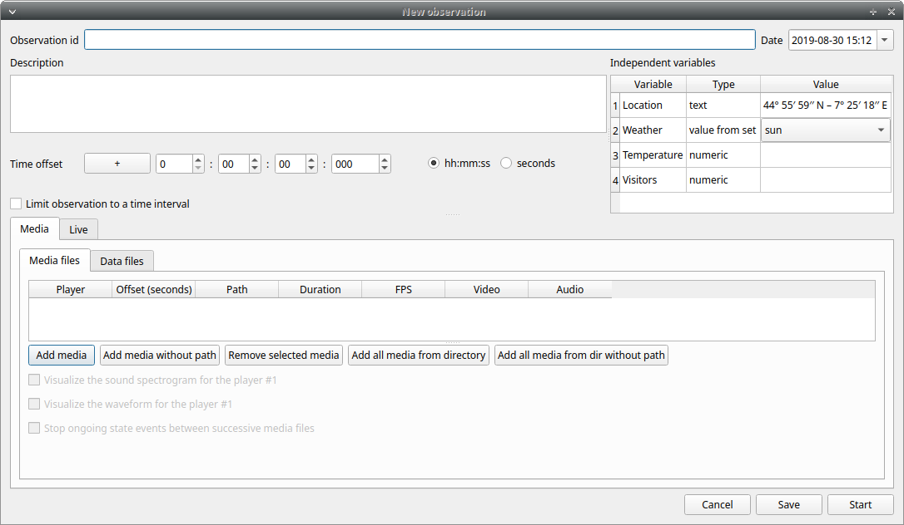
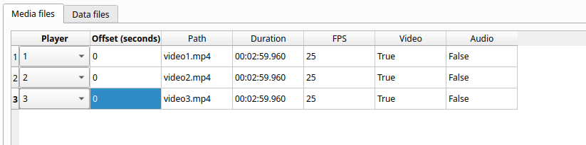

Create a new observation#
A video tutorial about making an observation is available at this link.
To create a new observation you must first Create a new project with BORIS or Open an existing project with BORIS.
Clicking on Observations > New observation will show the New observation window.

This window allow adding various observation data:
-
a mandatory Observation id (must be unique across all observations in the open project);
-
Date, which will be automatically set on the current date and time, but you can alternatively set this info on your media date and time, or whatever you prefer.
-
Description, which can host all the relevant information about your observation, but can be also left empty.
-
Independent variables (e.g. to specify factors that may influence the behaviors but will not change during the observation within a project).See the independent variables section for details.
-
Time offset. BORIS allow specifying a time offset that can be added or subtracted from the media timecode.
-
The Limit observation to a time interval option can be used to limit the observation to an arbitrary time interval.
You must then indicate if you want to make an observation based on pre-recorded media (audio / video) or a live observation.
Live observation#
During the live observation BORIS will show you a timer that will be used for recording time for coded events.
Click on the Live observation radio button to create a live observation.

Scan sampling#
In the above tab you can select a time for Scan sampling observation. In this case the timer will stop at every time offset you indicated and all the coded events will have the same time value.
Start from current time#
If you want that the time starts from the current time you can check the Start from current time checkbox.

If the Day time option is checked the start time will be the computer current time when you will press the Start button.
If the Epoch time is checked the start time will be the number of seconds since the Jan 1st, 1970 (1970-01-01). See Unix time for details. This option is usefull for long observations (few days) or observations that start before midnight and end after.
Start the observation#
Click the Start button to begin the live observation or Save to save it in the Observations list.
The main window during a live observation will look like this:

See the Live observations section to start coding.
Observation from media file(s)#
Click on the Observation from media file(s) radio button to create an observation based on one or more media files.

The Observation from media file(s) tab contains 2 tabs: Media files and Data files.
Click the Media files tab and add one or more media files using the Add media button. You have 3 options:
- with absolute path: the whole media file path will be recorded in the project
- with relative path: the media file path will be recorded relatively to the position of the BORIS project file (the directory of the BORIS project file must be included). This option is useful if you have to have to move your BORIS project file on another computer.
- from directory with absolute path: all the media file found in the directory will be added to the playlist (the whole media file path will be recorded in the project)
- from directory with relative path: all the media file found in the directory will be added to the playlist (the relative media file path will be recorded in the project)
Information about the selected media file will be extracted and displayed in the media list: media file path, media duration, number of frames by second (FPS), the presence of a video stream, the presence of an audio stream .

The dropdown list in the first column allow you to choose a player (for a maximum of 8). If you want to observer more media files simultaneously you must use consecutive players (starting from 1). See example below:

If you have to synchronize 2 (or more) videos you can use the Offset column to indicate when the 2nd player should start. For example if the video loaded in the second player starts 15 seconds after the first video you have to input 15 in the Offset cell. If the second video starts before the first player you can set a negative value in the Offset cell
If you have to play sequentially many videos you have to select the same player (#1) for all video you have loaded. This means that an event occurring at time t~x~ in the media file queued as second (e.g. second_video.mp4) in the playlist will be scored as happening at time t~1~ + t~x~ (where t~1~ is the duration of the first media file, e.g. first_video.mp4).
The Remove selected media button can be used to remove all the selected media files.
All the media types that can be played by the MPV player can be played in BORIS.
The Use media file name as observation id button will set the first media file name as observation id
Spectrogram visualization#
BORIS allow you to visualize the sound spectrogram during the media observation. Activate the Visualize spectrogram check box. BORIS will ask you to generate the spectrograms for all media files loaded in the first player.
The spectrogram visualization will be synchonized to the media position during the observation.

Close current behavior between videos#
This option is disabled for now.
External data files#
Note
At this time only 2 external data can be plotted with your media file
You can select one or more external data files to be plotted synchronously with your media. Click the Data files tab and use the Add data file button to select a data file.

The data files must be plain text files with at least 2 columns separated by a comma or a TAB character. One column must contain a timestamp that will be used to synchronize the plot with the media. The sampling rate can be variable.
Example of a plain text data file with 5 columns separated by comma (,):
Display,X Pos,Y Pos,Start Time (secs),Pupil Diameter
1,864,509,549.233,0.00295773451216519
1,863,505,549.25,0.00281810853630304
1,863,503,549.266,0.00287826382555068
1,861,502,549.283,0.0030536837875843
1,858,501,549.3,0.00308083021081984
1,856,499,549.316,0.00306266942061484
1,854,499,549.333,0.00305776367895305
[...]
In the above example the 4th column contains the timestamp and the 5th the value to be plotted.
Input the index of the column containing the timestamp and the index of the column containing the value to be plotted. The two indices must be separated by a comma (,). Click OK to close the window.
A new row will be added in the data files table.
You can modify/complete the following parameters by directly typing in the table cells:
- Columns to plot
- Plot title: the title of the plot
- Variable name
- Converters: Used if the timestamp is not expressed in seconds (see below for details)
- Time interval: The time interval that will be plotted (in seconds)
- Start position: the start position of data for synchronisation with the media (in seconds)
- Substract first value: if the timestamp does not start with a 0 value you can choose to substract the first value to all timestamp values.
- Color: the color of the color
NOTE : if you want to record the value of the plotted variable in a modifier of a behavior (see Value from external data file modifier) the modifier must have the same variable name.
You can check if the data from file can be correctly plotted by using the Show plot button. If the data are compatible you will see a plot otherwise you will obtain a message with an explanation.
For now only 2 values can be plotted synchronously with your media file. The values can come from the same file or from two different files.
During the observation tha values you have selected in external data files will be plotted synchronously with your media file.

Converters#
If the values in the timestamp column are not expessed in seconds (like 12.45) but in another format (HH:MM:SS, MM:SS, ISO8601 2018-01-18T12:31:40Z ...) you must use a converter that will convert the current format in seconds.
See the Converters' table in the project configuration.
A double-click on the converters cell will allow you to select a converter for each column to be plotted


Use the Show plot button to verify if your external data can be plotted without problem. The Close plot button will close the plot window.

Converters can also be used to convert values that are not time value.
Example of a converter for inverting value:
OUTPUT = - float(INPUT)
Start the observation#
Click the Start button to start coding. The Observation window will be closed and you'll be transferred to the main BORIS window. If you do not want to start the observation click the Save button. The observation will be saved in the observations list.
The main window during the observation of a single media file will look like this:
See the media coding section to start coding.
Observation from pictures#
Click on the Observation from pictures radio button to create an observation based on pictures.

Use the Add directory to select a directory containing the pictures you want to code. You can select many directories, in this case the pictures will be browsed in the order of the directories were added.
The Use the pictures directory as observation id button will set the directory name as observation id
Time#
You have 3 option for the coding time:
- No time: no time will be recorded. The image index (the position of image in the directory) and the image file path will be recorded.
- Use the EXIF DateTimeOriginal tag: the time will be extracted from the EXIF tag of the picture file (if any).
- Time lapse: this option will let you define the time interval between the pictures.
Start the observation#
Click the Start button to start coding. The Observation window will be closed and you\'ll be transferred to the main BORIS window. If you do not want to start the observation click the Save button. The observation will be saved in the observations list.

See the media coding section to start coding.
Various options#
Limit observation to a time interval#
This option can be used to limit the observation to a time interval for live or media based observations.